비선형 차분방정식의 경우 해를 구하기가 어렵다. 이 경우 그림으로 해를 분석하여 해가 수렴하는지 발산하는지를 분석하는 것이 편리하다.
\(y_{t+1} =f(y_{t} )\)인 비선형 1차 차분방정식이 있다. 이는 그림에서 파란 곡선으로 표시된다. 차분방정식에서는 수평축을 \(\,y_{t}\), 수직축을 \(\,y_{t+1}\)로 놓고 분석한다.
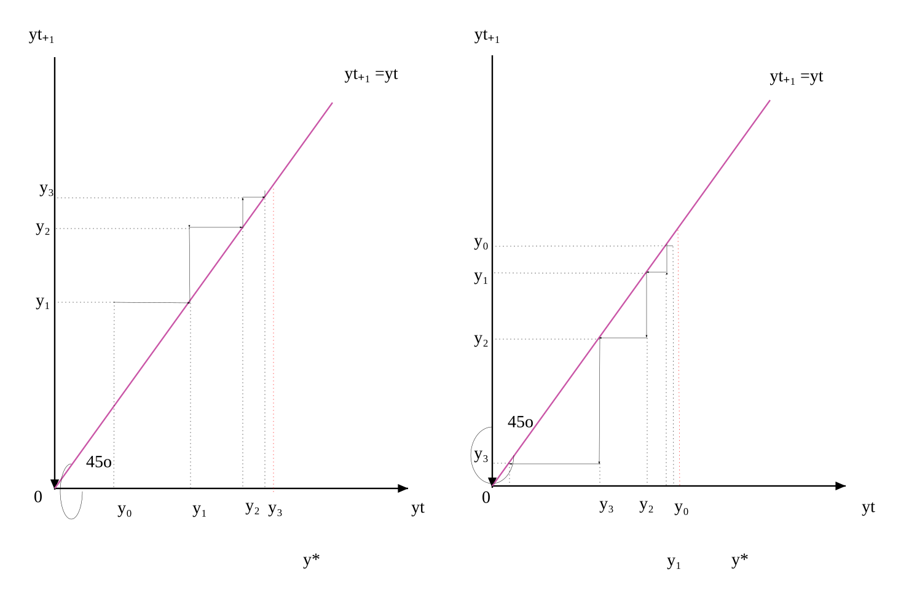
(그림 a) (그림 b)
i) 원점을 지나는 45o 선을 그린다. 즉 \(y_{t+1} \,=\,y_{t}\) 인 선을 그린다. 처음 \(y_{ 0}\) 가 주어졌을 때 이 점에서 수직인 선분이 \(f(y_{t} )\) 과 만나는 점이 \(y_{0+1} =y_{1}\) 이다.
ii) \(y_{ t+1}\) 축의 \(y_{1}\)에서 수평축에 수평인 선분을 그었을 때 45o선과 만나는 점이 \(y_{t}\) 축 상의 점 \(y_{1}\)이 된다. 이 \(y_{1}\)에서 수직인 선분이 \(f(y_{t} )\)과 만나는 점이 \(y_{2}\)이다.
iii) \(y_{ t+1}\) 축의 \(y_{2}\)에서 수평축에 수평인 선분을 그엇을 때 45o선과 만나는 점이 \(y_{t}\) 축상의 점 \(y_{2}\)이 된다. 이 \(y_{2}\)에서 수직인 선분이 \(f(y_{t} )\) 과 만나는 점이 \(y_{3}\)이다.
iv) \(y_{ t+1}\) 축의 \(y_{3}\)에서 수평축에 수평인 선분을 그엇을 때 45o선과 만나는 점이 \(y_{t}\) 축상의 점 \(y_{3}\)이 된다. 이 \(y_{3}\)에서 수직인 선분이 \(f(y_{t} )\) 과 만나는 점이 \(y_{4}\) 이다. ................ 등등
이상과 같은 작용이 계속되면 위 그림과 같이 위상선의 형태에 따라 균형상태로 수렴(그림 a) 또는 균형상태에서 점점 멀어지는 형태로 발산(그림 b)한다.
그림에서 \(y*\)와 같이 45도 선과 위상선과의 교차점에서 \(y_{t+1} =y_{t}\)이므로 시간의 변화에 관계없이 값이 변하지 않는다. 이 점을 정상상태(steady state), 또는 균형점(equilibrium point), 또는 기간간 균형(intertemporal equilibrium), 또는 고정점(fixed point)[27]이라 한다.
임의의 점에서 시작해서 \(y*\)에 수렴하는 경우를 안정점(stable equilibrium), 또는 안정경로(stable path)라 한다.
(그림 a)에서는 \(y*\)에 수렴하므로 해는 안정점이다.
모든 영역에서 균형점에 수렴하는 경우 전체적 안정점(globally stable equilibrium)이라 한다. 균형점 근방에서 균형점에 수렴하는 경우 국지적 안정점(locally stable equilibrium)이라 한다.
임의의 점에서 시작해서 \(y*\)에서 멀어지는 경우를 불안정점(unstable equilibrium)이라 한다.
(그림 b)에서는 \(y*\)에서 발산하므로 이 해는 불안정점이다.
아래 그림과 같이 위상선이 비선형일 경우 위상선의 모양에 따라 복수의 교차점이 발생할 수 있다. 이 경우 각각의 교차점에 따라 수렴(\(y*\)), 발산(\(y_{u}\)), 또는 발산(\(y_{s}\))이 발생할 수 있다. 이 경우 \(y*\)는 국지적 안정점이지만 전체적 안정점은 아니다. \(y_{s}\)와 같이 균형점을 중심으로 한 쪽 방향에서 감소하고 다른 쪽 방향에서 증가하는 이런 경우를 안장점(saddle point) 또는 안장경로(saddle path)라 한다.
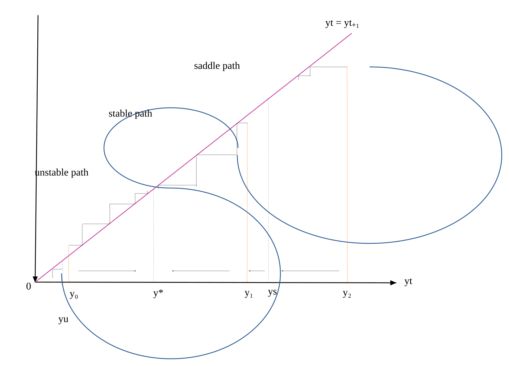
위상선이 선형인 경우 위상선의 기울기가 수렴, 발산을 판정하는 조건이 된다.
위상선이 비선형인 경우 45o선과의 교차점에서 위상선의 접선의 기울기가 수렴, 발산을 판정하는 조건이 된다.
(정리) 1차 차분방정식의 경우 균형점에서 접선의 기울기의 절대값이 1보다 작다면 교차점은 국지적으로 안정점이다. |
(증명)
비선형 차분방정식이 다음과 같다.
\(y_{t+1} \,=\,f(y_{t} )\)
균형점을 \(y*\)라 하면 정상상태에서 \(y_{t+1} \,=\,y_{t} \,=\,y*\)이므로 \(\,f(y*)\,=\,y*\)
균형점 주변의 미세한 변동을 \(\epsilon_{t}\)이라 하면
\(y_{t+1} \,=\,y_{t} \,+ \epsilon_{t+1} \,=\,y*\,+ \epsilon_{t+1}\)
⇒ \(\epsilon_{t+1} \,=\,y_{t+1} -y*\)
\(=\,f(y_{t} )\,-\,y*\)
\(=\,f(y*+ \epsilon_{t} )\,-\,y*\)
\(\,f(y*+ \epsilon_{t} )\,\)를 \(y*\) 주변에서 테일러 전개를 하면
\(\,f(y*+ \epsilon_{t} )\, \cong \,f(y*)\,+ \epsilon_{t} \, \left( \frac{df}{dy_{t}} \right) _{y_{t} =y*} \,\)
따라서
\(\epsilon_{t+1} \,=\,f(y*)\,+\, \epsilon_{t} \left( \frac{df}{dy_{t}} \right) _{y_{t} =y*} \,-\,y*\)
\(=\, \epsilon_{t} \left( \frac{df}{dy_{t}} \right) _{y_{t} =y*} \,\), (∵ 균형에서 \(\,f(y*)\,=\,y*\))
이는 \(\, \epsilon_{t}\)에 관한 1차 차분방정식이다.
따라서 \(\, \epsilon_{t} \,=\, \left( \frac{df}{dy_{t}} \right) ^{t} \epsilon_{0} \,\)
\(\left | \left( \frac{df}{dy_{t}} \right) _{y_{t} =y*} \, \right | <1\) 이면 \(t \to \infty\) 일 때 \(\epsilon_{t} \, \to \,0\) ; 안정상태이다.
\(\left | \left( \frac{df}{dy_{t}} \right) _{y_{t} =y*} \, \right | >1\) 이면 \(t \to \infty\) 일 때 \(\epsilon_{t} \, \to \, \infty\) ; 불안정상태이다.
Q.E.D.
(정리) 1차 차분방정식에서 균형점\((y*)\)에서 접선의 기울기의 절대값이 1인 경우, 즉 \(f'(y*)\,=\,1\) 인 경우 i) \(f ' '(y*)\,<\,0\) 또는 \(f ' ' (y*)\,>\,0\) 이면 불안정 상태, \(y*\)는 안장점이다. ii) \(f ' ' (y*)\,=\,0\) 이고 \(f ' ' ' (y*)\,<\,0\) 이면 안정상태 iii) \(f ' ' (y*)\,=\,0\) 이고 \(f ' ' ' (y*)\,>\,0\) 이면 불안정상태 |
그림 a), b)에서 \(y*\)는 안장점이다. c)는 안정점, d)는 불안정점이다.
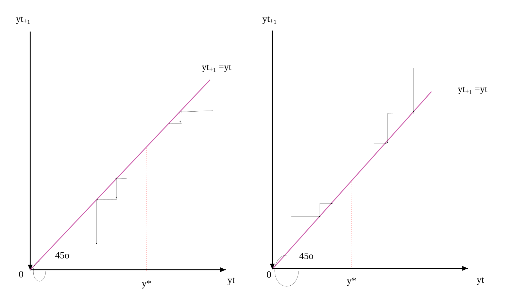
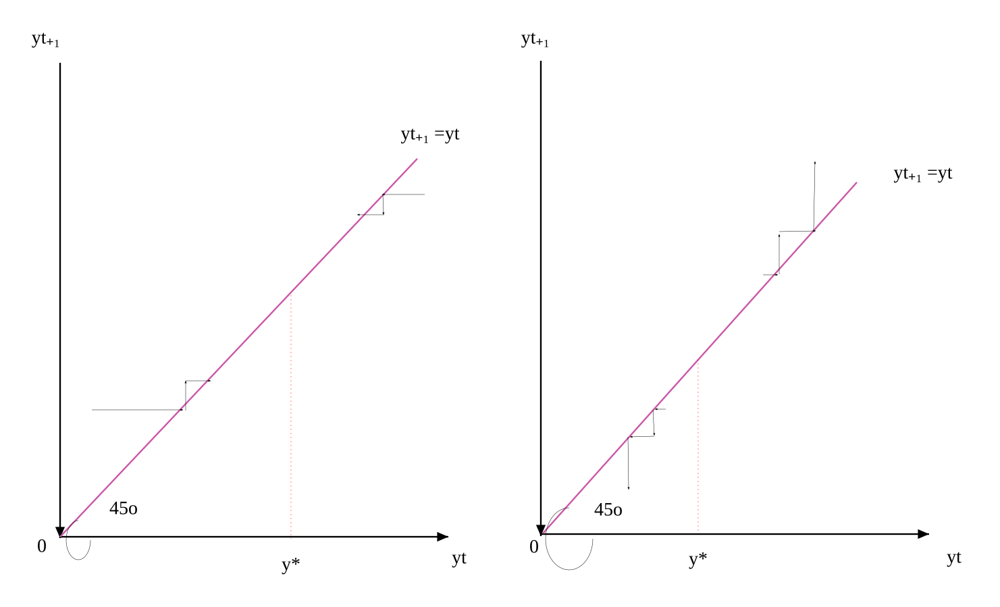
(정리) 1차 차분방정식의 경우 균형점에서 접선의 기울기가 음수이면 균형점을 중심으로 좌우로 진동한다(oscillate). 양수이면 단조적 운동(monotone movement)을 한다. |
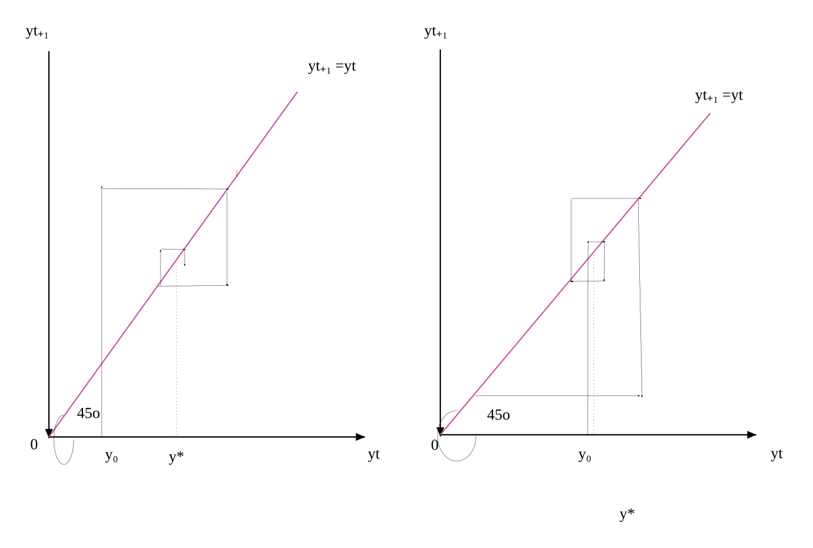
예) 다음 차분방정식의 위상도를 그리고 안정해를 구하라.
a) \(y_{t+1} \,=\,y_{t}^{2}\)
b) \(y_{t+1} \,=\,y_{t}^{0.5}\)
c) \(y_{t+1} \,=\,y_{t}^{-2}\)
d) \(y_{t+1} \,=\,y_{t}^{-0.5}\)
(풀이)
a) 교차점은
\(y_{t} \,=\,y_{t}^{2}\)
따라서 \(y_{t} \,=\,0,\,1\)
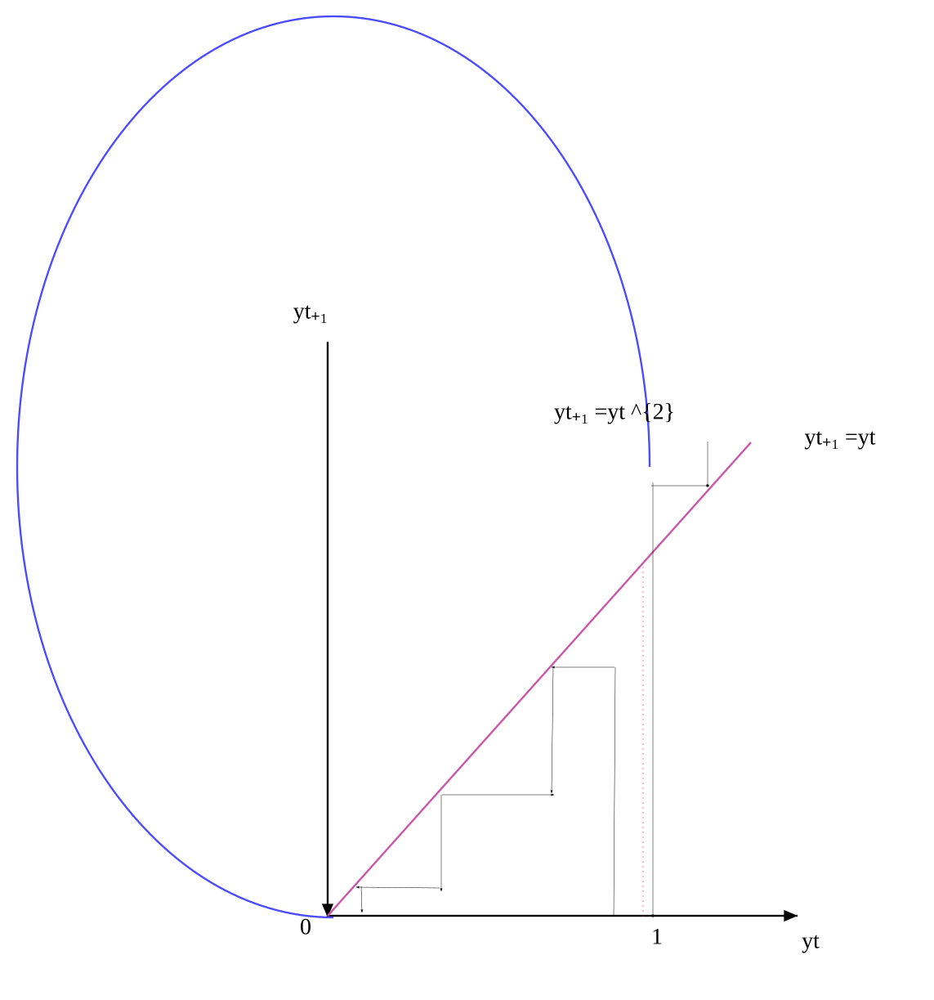
위상도에서 볼 때 0은 안정점, 1은 발산점이다.
b) 교차점은
\(y_{t} \,=\,y_{t}^{0.5}\) ⇒ \(y_{t} \,=\,0,\,1\)
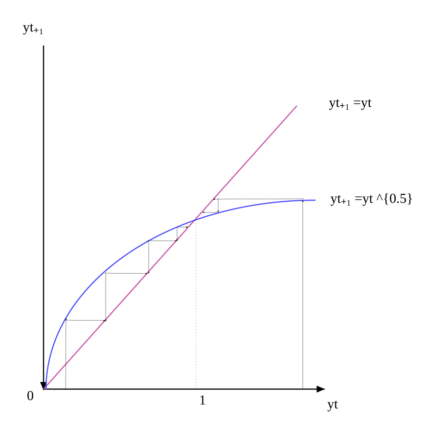
위상도에서 볼 때 0은 발산점, 1은 안정점이다.
c) 교차점은
\(y_{t} \,=\,y_{t}^{-2}\) ⇒ \(y_{t} \,=\,1\)
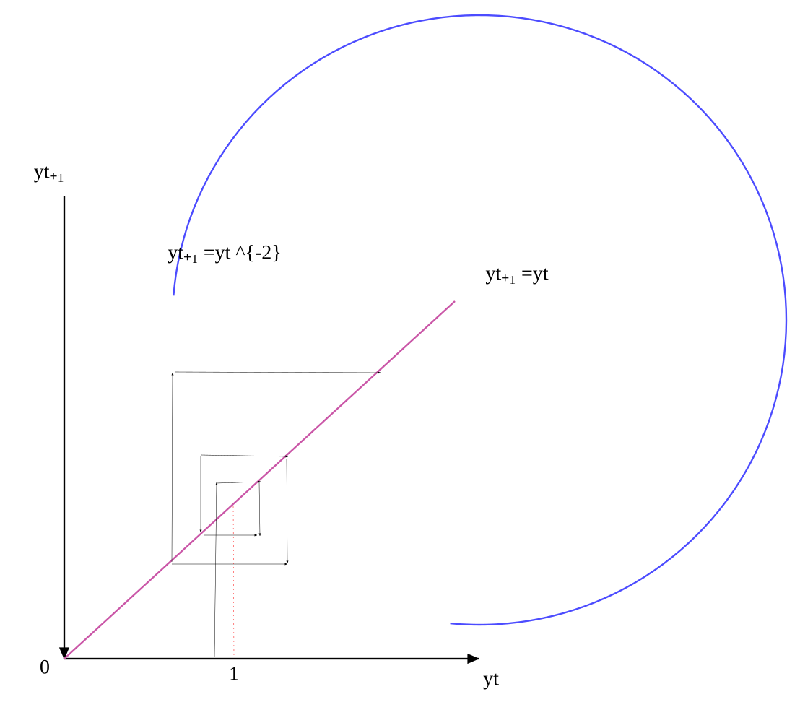
위상도에서 볼 때 1은 발산점이다. \(y_{t}\)는 1을 중심으로 좌우로 진동하면서 발산한다.
d) 교차점은
\(y_{t} \,=\,y_{t}^{-0.5}\) ⇒ \(y_{t} \,=\,1\)
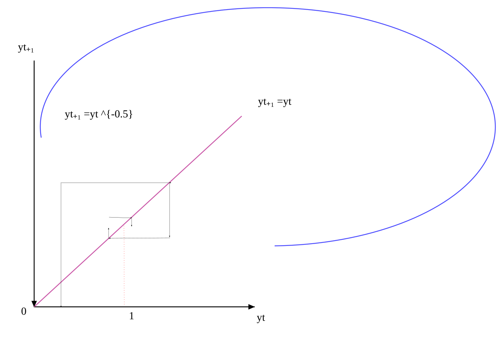
위상도에서 볼 때 1은 안정점이다. \(y_{t}\)는 1을 중심으로 좌우로 진동하면서 수렴한다.
(풀이끝)
예) 차분방정식 \(y_{t+1} \,=\,y_{t}^{\alpha }\) 의 국지적 안정성의 조건을 구하라.
(풀이)
\(f(y_{t} )\,=\,y_{t}^{\alpha }\) 를 미분하면
\(\frac{d}{dy_{t}} f(y_{t} )\,=\,f'(y_{t} )\,=\, \alpha y_{t}^{\alpha -1}\)
\(y_{t} \,=\,1\)은 교차점이다.
\(\,f ' (1)\,=\, \alpha\)
따라서 \(| \alpha |\,<\,1\) 이면 교차점 1은 국지적 안정적.
\(\alpha \,>\,0\) 이면
\(y_{t} \,=\,0\)도 교차점이다.
\(\,f ' (1)\,=\, {cases{0&\;if\, \alpha \,>\,1 \\ undefined&\;if\,1\,>\, \alpha \,>\,0}}\)
\(\alpha \,>\,1\) 이면 \(y_{t} \,=\,0\)는 국부적으로 안정점이다.
그러나 전체적으로 안정점은 아니다. \(y_{t+1} =y_{t}^{2}\)의 경우에서 보듯이 \(y_{t} \,>\,1\) 인 점에서는 발산한다.
(풀이끝)
국가의 총생산량이 자본의 함수로서 다음과 같이 표현된다고 하자.
\(y_{t} \,=\,k_{t}^{\alpha }\), \(0\,<\, \alpha \,<1\) .............①
\(k_{t}\) 는 t기의 자본량
매기 자본은 소득의 일부를 저축함으로써 축적되고, 일정 비율 감가상각 만큼 마모된다.
\(k_{t+1} \,=\,k_{t} \,- \delta k_{t} \,+\,sy_{t}\), \(0\,<\, \delta \,<1\), \(0\,<\,s\,<1\)...............②
\(\delta\)는 감가상각률, \(s\)는 소득의 저축비율
①, ②를 결합하여 차분방정식을 만들면
\(k_{t+1} \,=\,(1\,- \delta )k_{t} \,+\,sk_{t}^{\alpha }\)
이는 비선형 1차 차분방정식으로 직접 해를 구하기는 어렵다.
위상도 분석을 위해 위 차분방정식의 모양을 추정한다.
\(\,k_{t} \,=\,0\) 일 때 \(k_{t+1} \,=\,0\) 이므로 위상도에서 차분방정식의 그림은 원점을 통과한다.
\(\frac{dk_{t+1}}{dk_{t}} \,=\,1- \delta \,+\,s \alpha k_{t}^{\alpha -1} \,>\,0\), (∵ \(0\,<\, \delta \,<1\))
따라서 이 그림은 우상향한다.
\(\frac{d^{2} k_{t+1}}{dk_{t}^{2}} \,=\,s \alpha ( \alpha -1)k_{t}^{\alpha -2} \,<\,0\), (∵ \(0\,<\, \alpha \,<1\))
따라서 이 그림은 오목함수의 형태로서 체감하는 형태를 갖는다.
\(k_{t+1} =k_{t}\) 선과의 교차점은 2개가 존재한다.
\(k_{t} =0\)
다른 하나는
\(k_{t} \,=\,(1\,- \delta )k_{t} \,+\,sk_{t}^{\alpha }\)
⇒ \(\delta \,=\,sk_{t}^{\alpha -1}\)
⇒ \(k_{t} \,=\, \left( \frac{\delta }{s} \right) ^{1- \alpha }\)
\(k_{t} =0\) 에서 접선의 기울기는
\(\frac{dk_{t+1}}{dk_{t}} \,=\,1- \delta \,+\,s \alpha k_{t}^{\alpha -1} \,=\, \infty\)
따라서 \(k_{t} =0\)는 안정점이 아니다.
\(k_{t} \,=\, \left( \frac{\delta }{s} \right) ^{1- \alpha }\)에서 접선의 기울기는
\(\frac{dk_{t+1}}{dk_{t}} \,=\,1- \delta \,+\,s \alpha \left( \frac{\delta }{s} \right) \,=\,1\,-\, \delta \,+\, \alpha \delta \,\)
\(0\,<\,1\,-\, \delta \,+\, \alpha \delta \,<\,1\) 이므로
\(k_{t} \,=\, \left( \frac{\delta }{s} \right) ^{1- \alpha }\)는 국지적으로 안정점
접선의 기울기는 모든 점에서 양수이므로 \(k_{t} \,\)의 안정점의 경로는 단조적이다.
위상도가 포물선으로 그려지는 경우를 생각해 보자
다음의 차분방정식을 고려하자[28]
\(y_{t+1} \,=\,ry_{t} (1-y_{t} )\)
이는 \(y_{t+1} ,\,y_{t}\) 평면상에서 뒤집어진 포물선의 그래프이다.
최대값을 구하기 위해 미분하면
\(\frac{dy_{t+1}}{dy_{t}} \,=\,r\,-\,2ry_{t} \,=\,0\)
따라서 최대점은 \(y_{t} \,=\, \frac{1}{2}\)
\(y_{t+1} \,=\,y_{t}\) 직선과의 교차점은
\(y_{t} \,=\,ry_{t} (1-y_{t} )\)
∴ \(y_{t} \,=\,0\) 혹은 \(y_{t} \,=\, \frac{r-1}{r}\)
경제 변수인 \(y_{t} \,>\,0\) 이므로 r > 1 ..............①
두 점에서의 접선의 기울기는
\(\frac{dy_{t+1}}{dy_{t}} \,=\,r\,-\,2ry_{t} \,= {cases{r&\;y_{t} \,=\,0 \\ 2-r&\;y_{t\,} \,=\, \frac{r-1}{r}}} \,\)
r > 1 이므로 \(y_{t} \,=\,0\)에서 \(y_{t} \,\)의 경로는 불안정적(unstable)이다.
\(y_{t} \,=\, \frac{r-1}{r}\)에서는 |2-r| < 1 이면 국지적으로 안정적이다.
즉 \(1\,<\,r\,<\,3\) 이면 국지적으로 안정적이다. ..........③
교차점과 최대값의 위치를 비교하면
\(\, \frac{1}{2} \,>\, \frac{r-1}{r}\) ⇒ \(2\,>\,r\) ............②
①, ②로 부터 \(1\,<\,r\,<\,2\) 이면 교차점이 최대값보다 안쪽에 있다.
i) 교차점이 최대값보다 왼쪽에 있는 경우(\(1\,<\,r\,<\,2\))
따라서 ③의 결과와 종합하면 최대값이 교차점보다 우측에 있다면 교차점은 국지적으로 안정적이다.
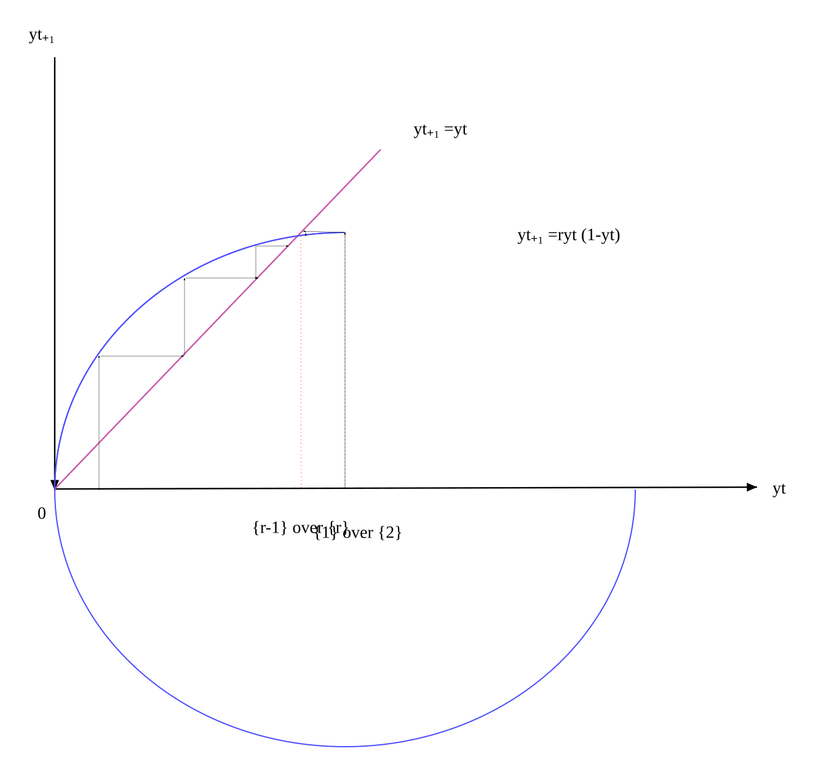
ii) 교차점이 최대값보다 우측에 있는 경우
\(r\,>\,2\) 이면 교차점이 최대값보다 우측에 존재한다.
이 때 접선의 기울기는 음이 된다.(∵ 접선의 기울기는 \(2-r\) 이므로)
\(2\,<\,r\,<\,3\) 이면 진동하면서 국지적으로 안정적이다. 경로는 교차점인 정상상태로 수렴한다.
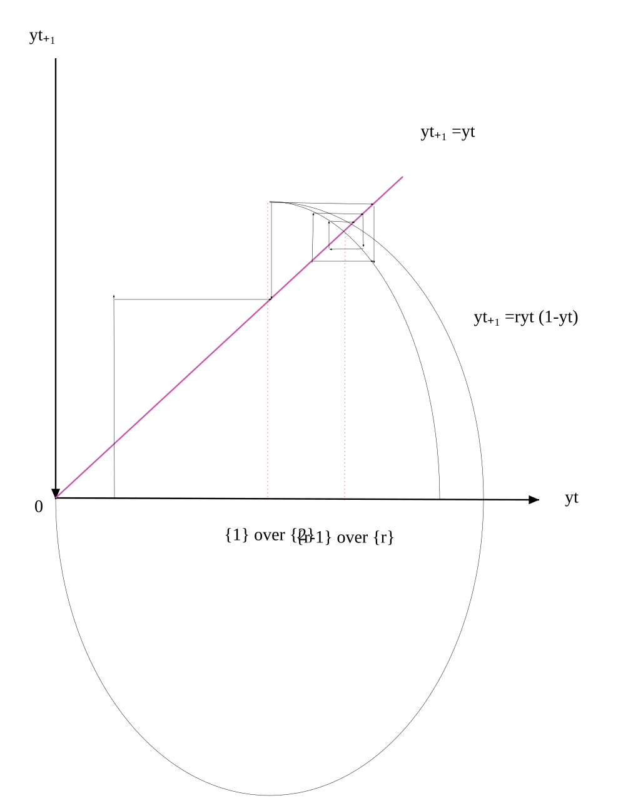
\(r\,>\,3\) 이면 진동하면서 불안정적이다. 이는 아래 그림에 설명되어있다.
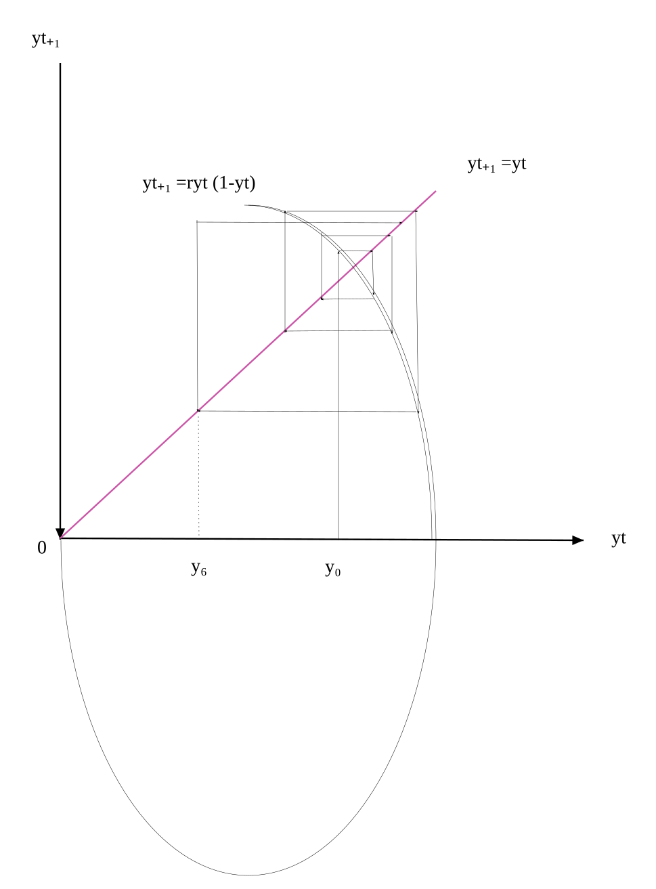
그러나 단조증감 형태의 함수와는 달리 포물선 형태의 함수는 무한대로 발산하지는 않는다.
\(y_{0}\)에서 시작하여 진동하면서 점차 발산하다가 \(y_{6}\)에서 접선의 기울기가 1보다 작은 지점에서 만나면 다시 수렴하는 형태를 띤다. 이는 음의 기울기 지점을 만나면 다시 발산하다가 1보다 작은 양의 기울기 지점을 만나면 수렴하는 형태를 반복한다. 교차점으로 수렴하지도 않지만 무한대로 발산하지도 않는다.
r = 3.2 인 경우 \(y_{6}\)에서 \(y_{5}\)와 \(y_{6}\)가 반복되는 현상이 발생한다. 두 값이 반복되므로 이도 일종의 균형상태라 말할 수 있다. 이런 현상을 ‘분기한다(bifurcate)’라고 한다.
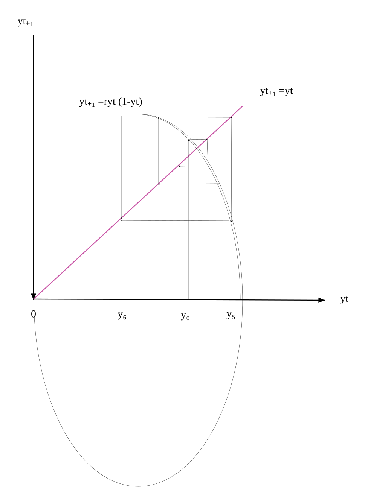
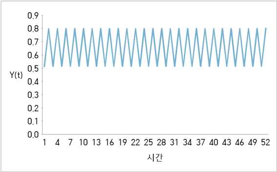
r = 3.2
이런 현상은 r = 3.5에서도 발생하는데 이번에는 4기의 시차를 갖는다.
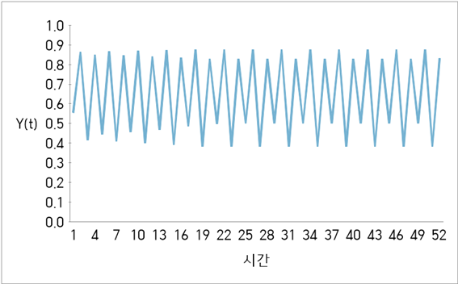
r = 3.5
r > 3.57 인 경우 \(y_{t}\)의 경로는 순환현상을 띄지만 일정한 시차를 갖는 것이 아니라 무작위의 진동 패턴을 갖는다. 이를 혼돈(chaos)이라 한다.
이때는 특히 초기값 \(y_{0}\)이 미세하게 변하더라도 전혀 다른 경로를 갖게 된다.
아래 그림은 r = 3.7일 때 초기값 \(y_{0} \,=\,0.2\)일 경우와 \(y_{0} \,=\,0.21\)일 경우를 비교한 것이다.
그림에서 보다시피 초기값이 조금만 변화해도 전혀 다른 패턴을 보임을 알 수 있다.
이와 같이 초기값의 미세한 변화에 경로가 크게 바뀌는 현상을 혼돈이론에서 나비효과(butterfly effect)라고 한다.
이런 현상은 경기순환의 무작위적인 진동이 경제의 비선형 동학관계 때문에 발생할 수도 있음을 시사하는 것이다.[29]
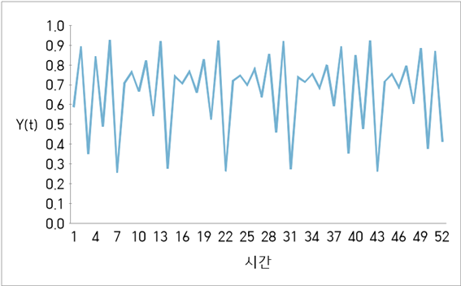
\(y_{0} \,=\,0.2\)
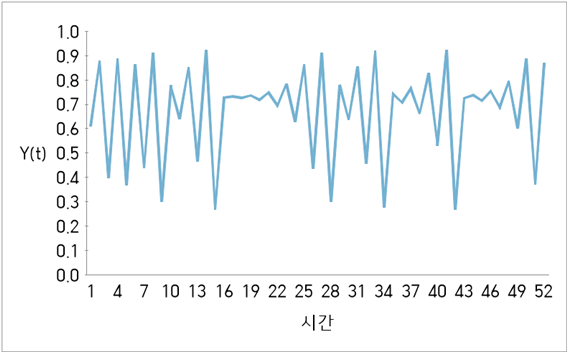
\(y_{0} \,=\,0.21\)
1차 차분방정식에만 적용할 수 있다. 2차 이상 고차차분방정식에는 적용하기 어렵다.
변수가 2개인 연립차분방정식의 경우 다음과 같은 방법으로 위상도 분석을 한다.
각 변수의 증분이 0인 선을 구한다.
\(\triangle y_{1} \,=\,y_{1} (t+1)\,-\,y_{1} (t)\,=\,0\)
\(\triangle y_{2} \,=\,y_{2} (t+1)\,-\,y_{2} (t)\,=\,0\)
두 선이 교차하는 점이 균형점이 된다. 선형일 경우 두 선은 \(y_{1} (t)\,\), \(y_{2} (t)\) 평면을 4 등분한다. 각 구간에서 시간의 증가에 따른 변수의 흐름을 추정한다.
다음의 연립 동차차분방정식을 고려하자
\(y_{1} (t+1)\,=\,3y_{1} (t)\,-y_{2} (t)\,\).................①
\(y_{2} (t+1)\,=\,-y_{1} (t)\,+3y_{2} (t)\,\)..............②
안정상태에서 시간에 따라 불변이므로
\(y_{1} \,=\,3y_{1} \,-\,y_{2} \,\)
\(y_{2} \,=\,-y_{1} \,+3y_{2} \,\)
따라서 균형점은 (0, 0)이다.
①의 양변에서 \(y_{1} (t)\,\)를 빼고 0으로 놓으면
\(y_{1} (t+1)\,-\,y_{1} (t)\) = \(\,2y_{1} (t)\,-\,y_{2} (t)\) = 0...............③
이 선은 \(y_{1} (t)\,\)이 시간의 변화에 관계없이 일정할 때 \(y_{2} (t)\)의 변화를 나타내는 선으로 기준선이라 부르자. 이를 \(y_{1} (t)\,\), \(y_{2} (t)\) 평면에 표시하면 다음 그림과 같다.
③의 왼쪽에 있는 점에서[30] \(y_{2} (t)\,>\,2y_{1} (t)\,\)이므로 \(y_{1} (t+1)\,<\,y_{1} (t)\)
즉 ③의 왼쪽에 있는 점에서 \(y_{1} (t)\,\)는 시간이 증가함에 따라 감소한다.
③의 오른쪽에 있는 점에서[31] \(y_{2} (t)\,<\,2y_{1} (t)\,\)이므로 \(y_{1} (t+1)\,>\,y_{1} (t)\)
즉 ③의 오른쪽에 있는 점에서 \(y_{1} (t)\,\)는 시간이 증가함에 따라 증가한다. 이는 (그림)에서 화살표로 표시된다. 화살표의 방향은 시간이 증가함에 따라 \(y_{1} (t)\,\)의 증감을 나타낸다. 화살표의 길이는 시간 1기간 증가에 따른 \(y_{1} (t)\,\) 값의 변화량을 나타낸다. 기준선에 접근할수록 화살표의 길이가 짧아지는 것은 기준선에 접근할수록 시간 1기간 증가에 따른 \(y_{1} (t)\,\) 값의 변화량이 작음을 의미. 기준선상에서는 \(y_{1} (t)\,\) 값의 변화량이 0이다.
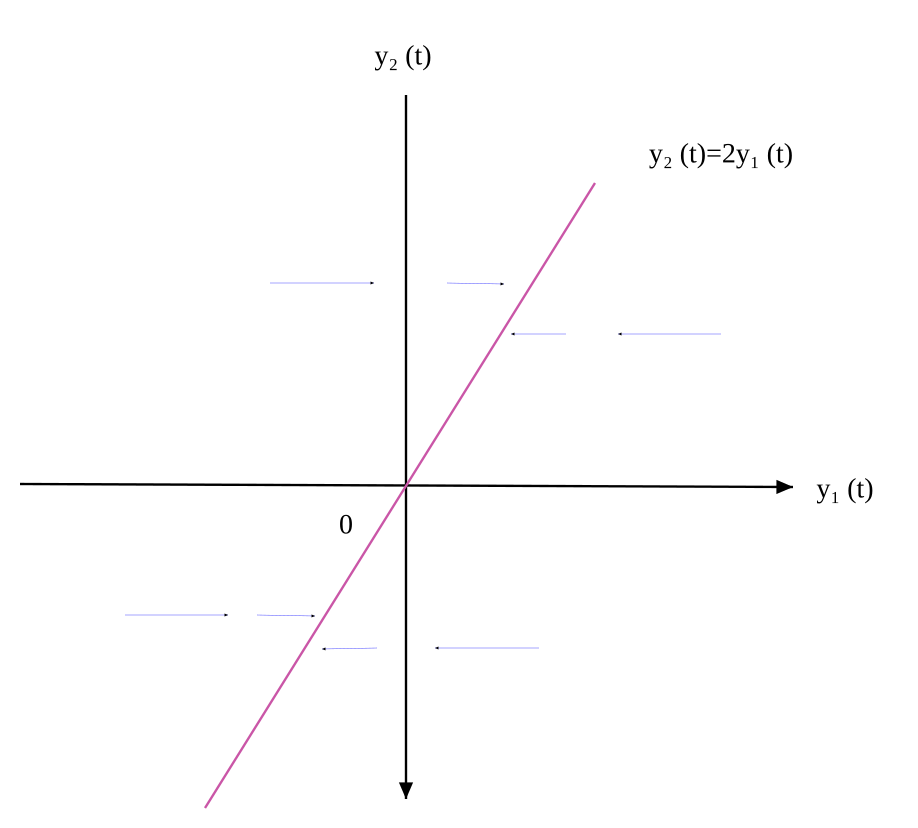
②의 양변에 \(y_{2} (t)\,\)를 빼고 0으로 놓으면
\(y_{2} (t+1)\,-\,y_{2} (t)\) = \(\,-y_{1} (t)\,+\,2\,y_{2} (t)\) = 0..............④
이 선은 \(y_{2} (t)\,\)가 일정할 때 \(y_{1} (t)\)의 변화를 나타내는 선이다. 이를 두 변수 \(y_{1} (t)\,\), \(y_{2} (t)\) 평면에 표시하면 다음 그림과 같다.
④의 왼쪽(또는 위쪽)에 있는 점에서 \(2y_{2} (t)\,>\,y_{1} (t)\,\)이므로 \(y_{2} (t+1)\,>\,y_{2} (t)\)
즉 \(y_{2} (t)\,\)는 시간이 증가함에 따라 증가한다.
④의 오른쪽(또는 아래쪽)에 있는 점에서 \(2y_{2} (t)\,<\,y_{1} (t)\,\)이므로 \(y_{2} (t+1)\,<\,y_{2} (t)\)
즉 \(y_{2} (t)\,\)는 시간이 증가함에 따라 감소한다.
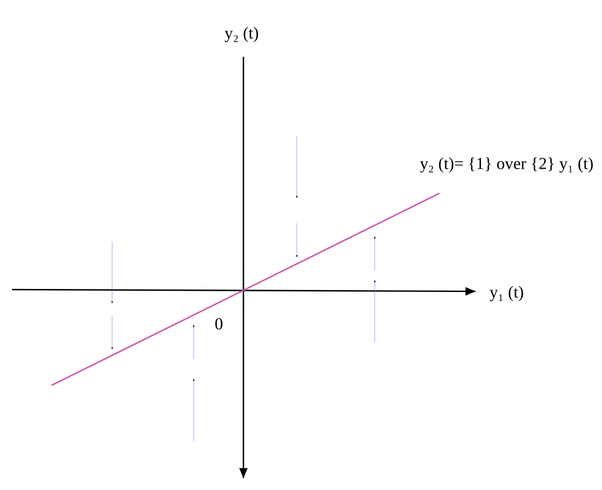
이제 이 두 그림을 합치면 다음 그림과 같다. ③의 기준선에서 \(y_{1} (t)\)의 변화는 없으므로 좌우 화살표는 표시되지 않는다. 그러나 0보다 큰 부분에서 ④의 기준선 위쪽에 있으므로 화살표는 위쪽방향으로 지나간다. 0보다 작은 부분에서 ④의 기준선 아래쪽에 있으므로 화살표는 아래쪽방향으로 지나간다. ④의 기준선에서 \(y_{2} (t)\,\)의 변화는 없으므로 상하 화살표는 표시되지 않는다. 그러나 0보다 큰 부분에서 ③의 기준선 오른쪽에 있으므로 화살표는 우측으로 지나간다. 0보다 작은 부분에서 ③의 기준선 좌측에 있으므로 화살표는 좌측으로 지나간다. 화살표의 길이는 균형점인 (0, 0)에 가까울수록 작아진다. 초록색 화살표는 두 개의 방향을 합한 벡터의 방향을 의미한다.
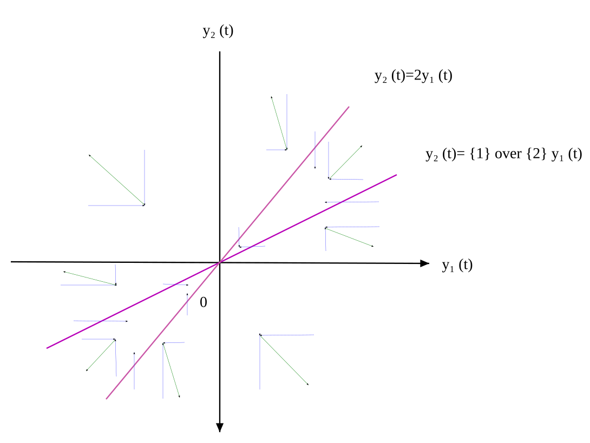
따라서 해의 흐름의 방향은 다음 그림과 같다.
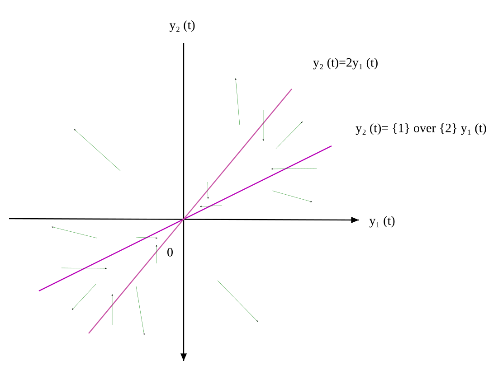
이상의 화살표들을 기초하여 해의 경로를 유추하면 다음 그림과 같다. 고동색 굵은 선은 여러 초기값에 대응하는 해의 경로들을 일부 제시한 것이다.
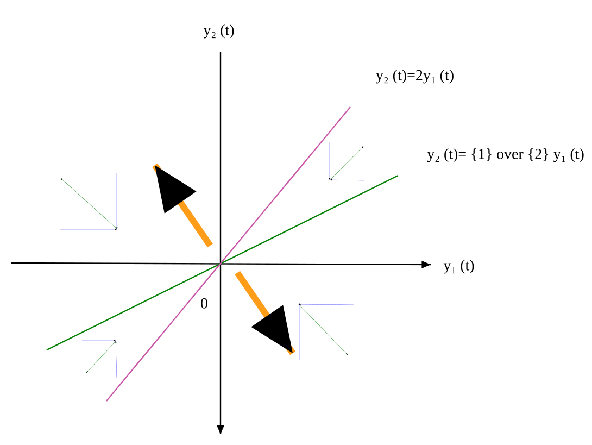
그림에서 보듯이 해는 균형점 (0, 0)에서 발산하는 경로를 취한다.
이 차분방정식의 고유치를 구하면
A = \({\begin{pmatrix}\,3 & \,1 \\ 1 & \,3\end{pmatrix}}\)의 고유치는
\((3- \lambda )(3- \lambda )-1\,=\,0\)
⇒ \(\lambda^{2} \,-\,6 \lambda \,-8\,=\,0\)
⇒ \(( \lambda \,-\,4)( \lambda -2)\,=\,0\)
∴ \(\lambda_{1} \,=\,4\), \(\lambda_{2} \,=\,2\)
두 개의 고유치가 모두 1보다 크므로 해는 무한대로 발산한다. 위상도 분석과 같은 결과이다.
이상과 같이 위상도 분석은 차분방정식의 해를 구하기 어려운 경우 해의 경로를 이해하는데 도움을 준다.
아래 그림은 스프레드 시트 프로그램을 이용하여 초기값 (1, 0.9), (1, 1.1), (-1, -0.9), (-1, -1.1)을 각각 차분방정식에 대입했을 때 해의 경로를 그린 것이다.
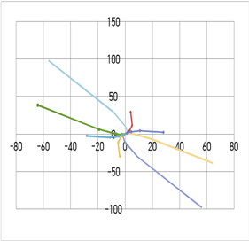
다음의 연립 동차차분방정식을 고려하자
\(y_{1} (t+1)\,=\,y_{2} (t)\,\).....................................①
\(y_{2} (t+1)\,=\,-0.4y_{1} (t)\,+1.3y_{2} (t)\,\)..............②
안정상태에서 시간에 따라 불변이므로
\(y_{1} \,=\,y_{2} \,\)
\(y_{2} \,=\,-0.4y_{1} \,+1.3y_{2} \,\)
따라서 균형점은 (0, 0)이다.
①의 양변에 \(y_{1} (t)\,\)를 빼고 0으로 놓으면
\(y_{1} (t+1)\,-\,y_{1} (t)\) = \(\,y_{2} (t)\,-\,y_{1} (t)\) = 0............③
③의 왼쪽에 있는 점에서 \(y_{2} (t)\,>\,y_{1} (t)\,\)이므로 \(y_{1} (t+1)\,>\,y_{1} (t)\)
\(y_{1} (t)\,\)는 시간에 따라 증가. 오른쪽에 있는 점에서는 반대
②의 양변에 \(y_{2} (t)\,\)를 빼고 0으로 놓으면
\(y_{2} (t+1)\,-\,y_{2} (t)\) = \(\,-0.4y_{1} (t)\,+\,0.3\,y_{2} (t)\) = 0...............④
④의 위쪽에 있는 점에서 \(\,-0.4y_{1} (t)\,+\,0.3\,y_{2} (t)\,>\,0\) 이므로 \(y_{2} (t+1)\,>\,y_{2} (t)\)
즉 \(y_{2} (t)\,\)는 시간에 따라 증가한다는 의미. 아래쪽에 있는 점에서는 반대
몇몇 초기값에 대응하는 해의 경로를 그림으로 묘사하면 다음과 같다.
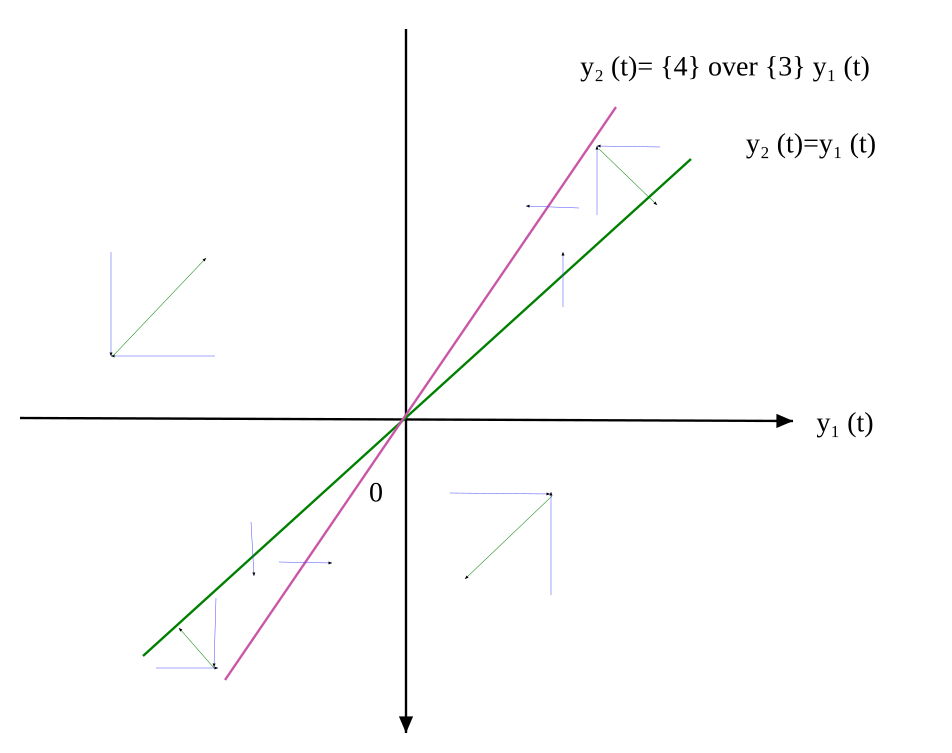
각 벡터의 방향과 특히 두 기준선에서 각 벡터의 방향의 변화에 유의하면서 해의 경로를 그리면 그림의 고동색 선이 된다. 그림에서 보듯이 해는 균형점 (0, 0)으로 수렴하는 경로를 취한다.[32]
이 차분방정식의 고유치는 앞의 예)에서 구했었다. \(\lambda_{1} \,=\,0.5\), \(\lambda_{2} \,=\,0.8\).두 개의 고유치가 모두 1보다 작으므로 해는 (0, 0)으로 수렴한다. 위상도 분석과 같은 결과이다.
아래 그림은 스프레드 시트 프로그램을 이용하여 초기값 (0, 1), (1, 0), (0, -1), (-1, 0)을 각각 차분방정식에 대입했을 때 해의 경로를 그린 것이다.
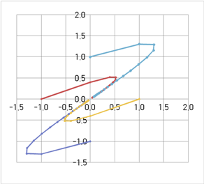
다음의 연립 동차차분방정식을 고려하자
\(y_{1} (t+1)\,=\,y_{2} (t)\,\).....................................①
\(y_{2} (t+1)\,=\,-y_{1} (t)\,+2.5y_{2} (t)\,\)...................②
안정상태에서 시간에 따라 불변이므로
\(y_{1} \,=\,y_{2} \,\)
\(y_{2} \,=\,-y_{1} \,+2.5y_{2} \,\)
따라서 균형점은 (0, 0)이다.
①의 양변에 \(y_{1} (t)\,\)를 빼고 0으로 놓으면
\(y_{1} (t+1)\,-\,y_{1} (t)\) = \(\,y_{2} (t)\,-\,y_{1} (t)\) = 0 .............③
③의 왼쪽에 있는 점에서 \(y_{2} (t)\,>\,y_{1} (t)\,\)이므로 \(y_{1} (t+1)\,>\,y_{1} (t)\)
\(y_{1} (t)\,\)는 시간에 따라 증가. 오른쪽에 있는 점에서는 반대
②의 양변에 \(y_{2} (t)\,\)를 빼고 0으로 놓으면
\(y_{2} (t+1)\,-\,y_{2} (t)\) = \(\,-y_{1} (t)\,+\,1.5\,y_{2} (t)\) = 0 ..............④
④의 왼쪽에 있는 점에서 \(\,-y_{1} (t)\,+\,1.5\,y_{2} (t)\,>\,0\) 이므로 \(y_{2} (t+1)\,>\,y_{2} (t)\)
즉 \(y_{2} (t)\,\)는 시간에 따라 증가한다는 의미. 오른쪽에 있는 점에서는 반대
이를 그림으로 묘사하면
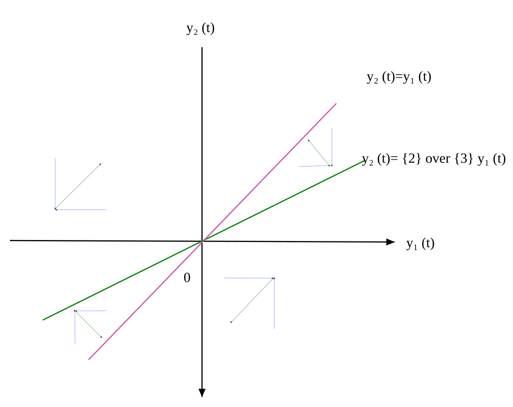
각 벡터의 방향과 특히 두 기준선에서 각 벡터의 방향의 변화에 유의하면서 해의 경로를 그리면 그림의 고동색 선이 된다. 그림에서 보듯이 해는 균형점 (0, 0)으로 수렴하는 경로를 취하다가 발산한다. 즉 안장경로이다.
이 문제의 해는 앞의 예) 참조.
아래 그림은 스프레드 시트 프로그램을 이용하여 초기값 (2000, 1010), (2000, 990), (-2000, -1010), (-2000, -990)을 각각 차분방정식에 대입했을 때 해의 경로를 그린 것이다.
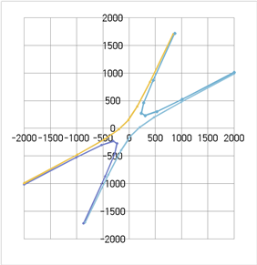
다음의 연립 비동차 차분방정식을 고려하자.
\(y_{1} (t)\,=\,5y_{1} (t-1)\,-y_{2} (t-1)\,+\,2\) ............①
\(y_{2} (t)\,=\,2y_{1} (t-1)\,+2y_{2} (t-1)\,+\,2\).............②
안정상태에서 시간에 따라 불변이므로
\(y_{1} \,=\,5y_{1} \,-y_{2} \,+\,2\)
\(y_{2} \,=\,2y_{1} \,+2y_{2} \,+\,2\)
따라서 균형점은 \(\left( - \frac{2}{3} ,\,- \frac{2}{3} \right)\)
①에서 \(y_{1} (t-1)\,\)를 빼면 \(y_{1} (t)\,-\,y_{1} (t-1)\,=\,4y_{1} (t-1)\,-y_{2} (t-1)\,+\,2\) ................③
③의 우측에서 \(y_{1} (t)\)는 증가[33], 좌측은 반대
②에서 \(y_{2} (t-1)\,\)를 빼면 \(y_{2} (t)\,-\,y_{2} (t-1)\,=\,2y_{1} (t-1)\,+y_{2} (t-1)\,+\,2\) ................④
④의 우측에서 \(y_{2} (t)\)는 증가, 좌측은 반대
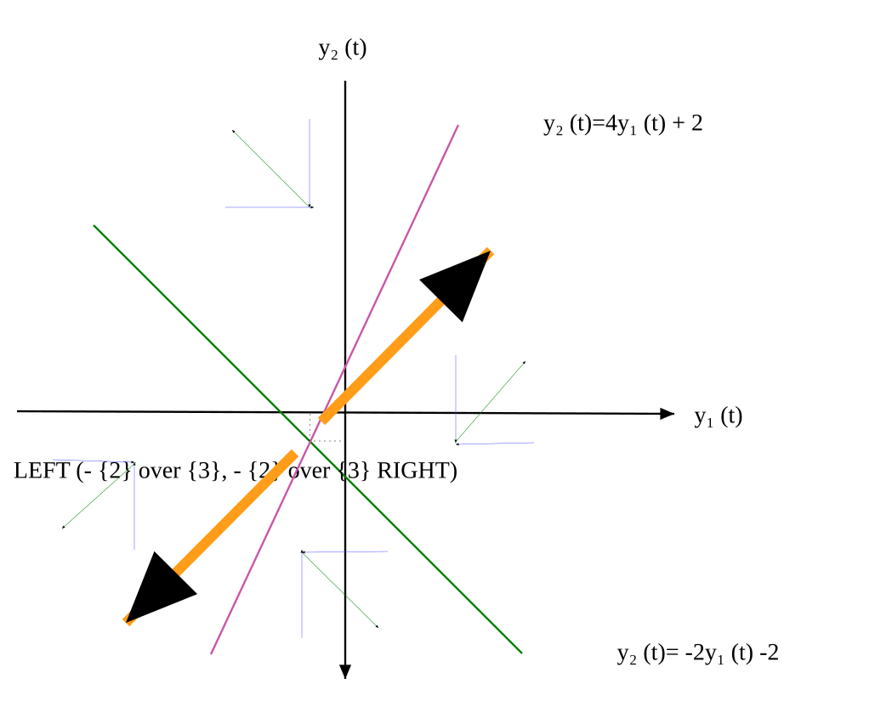
고유값이 음수인 경우 해의 경로는 점진적으로 움직이지 않고 점프하는 현상이 발생한다. 이 경우 실제 고유값을 통한 수렴, 발산의 판정과 위상도를 통한 분석이 다를 수 있다.
다음의 문제를 고려하자.
\(y_{1} (t+1)\,=\,2y_{1} (t)\,+\,4y_{2} (t)\,\)
\(y_{2} (t+1)\,=\,y_{1} (t)\,\)
이 차분방정식의 고유값은 다음과 같다.
A = \({\begin{pmatrix}\,2 & \,4 \\ 1 & \,0\end{pmatrix}}\)의 고유치는
\(- \lambda (2- \lambda )-4\,=\,0\)
⇒ \(\lambda^{2} \,-\,2 \lambda \,-4\,=\,0\)
⇒ \(\lambda \,=\, \frac{2\pm \sqrt {20}}{2} \,\)
∴ \(\lambda \,=3.236,\,-1.236\)
두 고유치의 절대값이 모두 1 보다 크므로 해는 발산한다.
이제 이의 위상도를 그려보자.
\(y_{1} (t+1)\,-\,y_{1} (t)\,=\,y_{1} (t)\,+\,4y_{2} (t)\,\)
\(y_{1} (t+1)\,-\,y_{1} (t)\,>\,0\,\) ⇒ \(y_{2} (t)\,>\,- \frac{1}{4} y_{1} (t)\,\)
따라서 \(y_{2} (t)\,=\,- \frac{1}{4} y_{1} (t)\,\) 위쪽에서 \(y_{1} (t)\,\)은 증가하고 아래쪽은 반대이다.
\(y_{2} (t+1)\,-\,y_{2} (t)\,=\,y_{1} (t)\,-\,y_{2} (t)\)
\(y_{2} (t+1)\,-\,y_{2} (t)\,>\,0\,\) ⇒ \(y_{2} (t)\,<y_{1} (t)\,\)
따라서 \(y_{2} (t)\,=\,y_{1} (t)\,\) 위쪽에서 \(y_{1} (t)\,\)은 감소하고 아래쪽은 반대이다.
이상으로부터 위상도를 그리면 아래 그림과 같다. 화살표의 방향상 안장경로를 갖는 것처럼 보인다. 그러나 앞에서 보았듯이 고유값의 절대값이 모두 1보다 크므로 해는 발산한다. 따라서 고유값이 음수인 경우 위상도 분석은 해의 경로에 대한 잘못된 해석을 일으킬 수 있다.
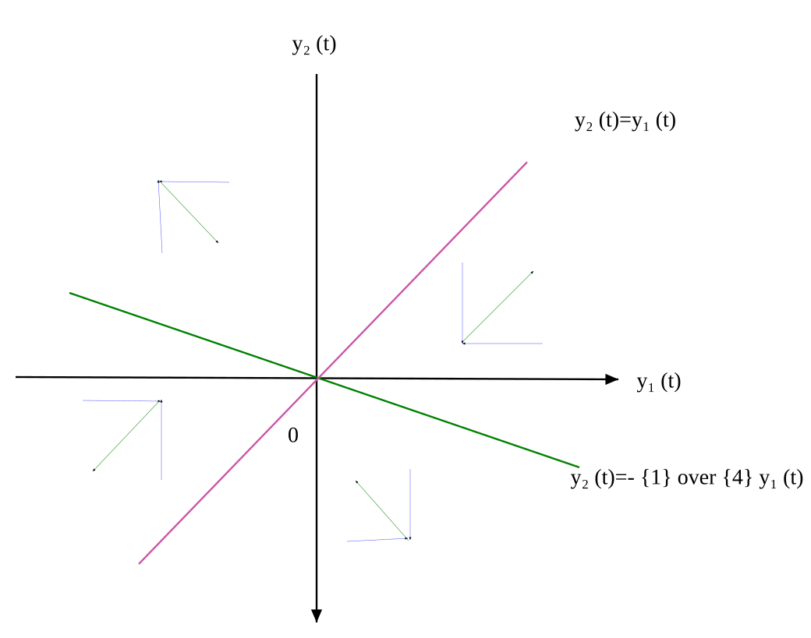
결론적으로 차분방정식의 위상도 분석은 고유값이 음수인 경우 바람직하지 않다.[34]
차분방정식이 비선형함수이거나 함수의 형태가 구체화되지 않는 경우는 숫자를 대입해서 크기를 비교하기 어렵다. 이 경우 다음과 같이 위상도 분석을 행한다. 이런 경우는 경제모형의 설정에서 많이 발생한다.
\(\triangle y_{1} \,=\,y_{1} (t+1)\,-\,y_{1} (t)\,=\,f(y_{1} (t),\,y_{2} (t))\)
\(\triangle y_{2} \,=\,y_{2} (t+1)\,-\,y_{2} (t)\,=\,g(y_{1} (t),\,y_{2} (t))\)
i) \(\frac{d \triangle y_{1}}{dy_{1} (t)} \,=\, \frac{\partial f}{\partial y_{1} (t)} \,>\,0\) 이라면
\(y_{1} (t)\)가 증가할수록 \(\triangle y_{1}\)가 증가한다는 의미. \(\triangle y_{1}\)가 증가한다는 것은 시간에 따라 \(y_{1}\)이 증가함을 의미. \(y_{1} (t)\)이 증가한다는 것은 \(\triangle y_{1} \,=\,0\) 기준선 우측을 의미하고, 시간에 따라 \(y_{1}\)이 증가한다는 것은 기준선 우측에서 화살표는 \(\to\) 방향을 의미
\(y_{1} (t)\)가 감소할수록 \(\triangle y_{1}\)가 감소한다는 의미. \(\triangle y_{1}\)가 감소한다는 것은 시간에 따라 \(y_{1}\)이 감소함을 의미. \(y_{1} (t)\)가 감소한다는 것은 \(\triangle y_{1} \,=\,0\) 기준선 좌측을 의미하고, 시간에 따라 \(y_{1}\)이 감소한다는 것은 기준선 좌측에서 화살표는 \(larrow\) 방향을 의미
ii) \(\frac{d \triangle y_{1}}{dy_{1} (t)} \,=\, \frac{\partial f}{\partial y_{1} (t)} \,<\,0\) 이라면
\(y_{1} (t)\)가 증가할수록 \(\triangle y_{1}\)가 감소한다는 의미. \(\triangle y_{1}\)가 감소한다는 것은 시간에 따라 \(y_{1}\)이 감소함을 의미. \(y_{1} (t)\)이 증가한다는 것은 \(\triangle y_{1} \,=\,0\) 기준선 우측을 의미하고, 시간에 따라 \(y_{1}\)이 감소한다는 것은 기준선 우측에서 화살표는 \(larrow\) 방향을 의미
\(y_{1} (t)\)가 감소할수록 \(\triangle y_{1}\)가 증가한다는 의미. \(\triangle y_{1}\)가 증가한다는 것은 시간에 따라 \(y_{1}\)이 증가함을 의미. \(y_{1} (t)\)가 감소한다는 것은 \(\triangle y_{1} \,=\,0\) 기준선 좌측을 의미하고, 시간에 따라 \(y_{1}\)이 증가한다는 것은 기준선 좌측에서 화살표는 \(\to\) 방향을 의미
iii) \(\frac{d \triangle y_{2}}{dy_{2} (t)} \,=\, \frac{\partial f}{\partial y_{2} (t)} \,>\,0\) 이라면
\(y_{2} (t)\)가 증가할수록 \(\triangle y_{2}\)가 증가한다는 의미. \(\triangle y_{2}\)가 증가한다는 것은 시간에 따라 \(y_{2}\)가 증가함을 의미. \(y_{2} (t)\)이 증가한다는 것은 \(\triangle y_{2} \,=\,0\) 기준선 위쪽을 의미하고, 시간에 따라 \(y_{2}\)가 증가한다는 것은 기준선 위쪽에서 화살표는 \(uparrow\) 방향을 의미
\(y_{2} (t)\)가 감소할수록 시간에 따라 \(y_{2}\)가 감소함을 의미. 기준선 아래쪽에서 화살표는 \(downarrow\) 방향
iv) \(\frac{d \triangle y_{2}}{dy_{2} (t)} \,=\, \frac{\partial f}{\partial y_{2} (t)} \,<\,0\) 이라면 반대이다.
이상의 방법을 앞의 선형의 차분방정식 예에 적용해도 같은 결과를 가져옴을 알 수 있다.
예)
\(y_{1} (t+1)\,=\,-y_{1}^{2} (t)\,+\,y_{1} (t)\,+y_{2} (t)\,\)...........①
\(y_{2} (t+1)\,=\,y_{1}^{2} (t)\,+\,2y_{2} (t)\,-\,2\) ......................②
(1, 1), (-1, 1) 두 개의 균형점이 존재한다.
①의 기준선은
\(\triangle y_{1} (t)\,=\,y_{1} (t+1)\,-\,y_{1} (t)\,=\,-y_{1}^{2} (t)\,+y_{2} (t)\,\)
(방법1)
예를 들어 (0, 1)을 대입하면 \(y_{1} (t+1)\,-\,y_{1} (t)\,>\,0\) 이므로 \(y_{2} (t)\,=\,y_{1}^{2} (t)\,\) 곡선 위쪽에서는 시간에 따라 \(y_{1} (t)\) 증가. 아래쪽에서는 반대.
(방법2)
\(\frac{\partial \triangle y_{1} (t)}{\partial y_{1} (t)} \,=\,-2y_{1} (t)\) 이므로
i) \(y_{1} (t)\,>\,0\) 인 구간에서 \(\frac{\partial \triangle y_{1} (t)}{\partial y_{1} (t)} \,<\,0\)
\(y_{1} (t)\)가 증가할수록 \(\triangle y_{1}\)가 감소한다는 의미. \(\triangle y_{1}\)가 감소한다는 것은 시간에 따라 \(y_{1}\)이 감소함을 의미. \(y_{1} (t)\)이 증가한다는 것은 \(\triangle y_{1} (t)\,=\,y_{1} (t+1)\,-\,y_{1} (t)\,=\,-y_{1}^{2} (t)\,+y_{2} (t)\,=0\) 선 우측을 의미하고 시간에 따라 \(y_{1}\)이 감소한다는 것은 화살표는 \(larrow\) 방향을 의미
\(y_{1} (t)\)가 감소할수록 \(\triangle y_{1}\)가 증가한다는 의미. \(\triangle y_{1}\)가 증가한다는 것은 시간에 따라 \(y_{1}\)이 증가함을 의미. \(y_{1} (t)\)이 감소한다는 것은 \(\triangle y_{1} (t)\,=\,y_{1} (t+1)\,-\,y_{1} (t)\,=\,-y_{1}^{2} (t)\,+y_{2} (t)\,=0\) 선 좌측을 의미하고 시간에 따라 \(y_{1}\)이 증가한다는 것은 화살표는 \(\to\) 방향을 의미
ii) \(y_{1} (t)\,<\,0\) 인 구간에서 \(\frac{\partial \triangle y_{1} (t)}{\partial y_{1} (t)} \,>\,0\)
\(y_{1} (t)\)가 증가할수록 \(\triangle y_{1}\)가 증가한다는 의미. \(\triangle y_{1}\)가 증가한다는 것은 시간에 따라 \(y_{1}\)이 증가함을 의미. \(y_{1} (t)\)이 증가한다는 것은 \(\triangle y_{1} (t)\,=\,y_{1} (t+1)\,-\,y_{1} (t)\,=\,-y_{1}^{2} (t)\,+y_{2} (t)\,=0\) 선 우측을 의미하고 시간에 따라 \(y_{1}\)이 증가한다는 것은 화살표는 \(\to\) 방향을 의미
\(y_{1} (t)\)가 감소할수록 \(\triangle y_{1}\)가 감소한다는 의미. \(\triangle y_{1}\)가 감소한다는 것은 시간에 따라 \(y_{1}\)이 감소함을 의미. \(y_{1} (t)\)이 감소한다는 것은 \(\triangle y_{1} (t)\,=\,y_{1} (t+1)\,-\,y_{1} (t)\,=\,-y_{1}^{2} (t)\,+y_{2} (t)\,=0\) 선 좌측을 의미하고 시간에 따라 \(y_{1}\)이 감소한다는 것은 화살표는 \(larrow\) 방향을 의미
이를 위상도로 그리면 그림과 같다.
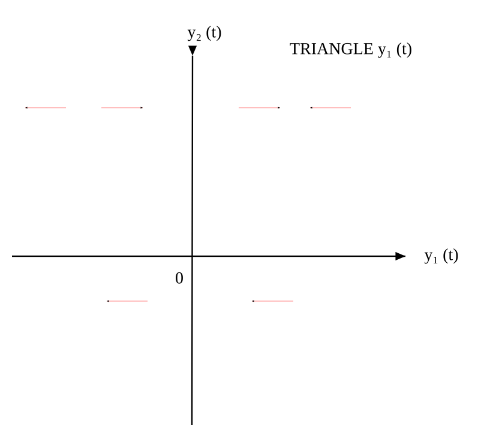
②의 기준선은
\(y_{2} (t+1)\,-\,y_{2} (t)=\,y_{1}^{2} (t)\,+\,y_{2} (t)\,-\,2\)
예를 들어 (0, 0)을 대입하면 \(y_{1} (t+1)\,-\,y_{1} (t)\,<\,0\) 이므로 \(y_{2} (t)\,=\,-y_{1}^{2} (t)\,+\,2\) 곡선 아래쪽에서는 시간에 따라 \(y_{1} (t)\) 감소. 위쪽에서는 반대.
또는 \(\frac{\partial \triangle y_{2} (t)}{\partial y_{2} (t)} \,=\,1\,>\,0\) 이므로 위쪽에서 \(y_{2} (t)\)는 시간에 따라 증가. 아래쪽에서는 반대.
이를 위상도로 그리면 그림과 같다.
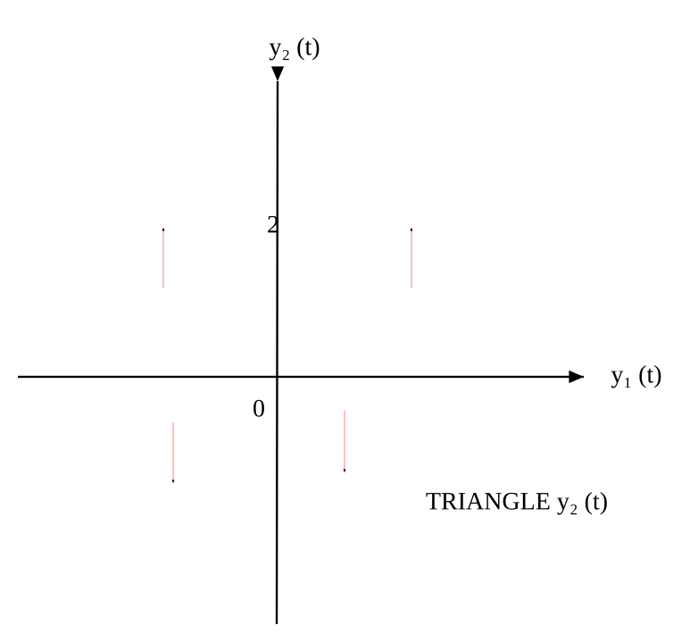
두 개의 위상도를 합치면 아래 그림과 같다. 균형점 (1, 1)은 안장점이고 균형점 (-1, 1)은 발산점이다.
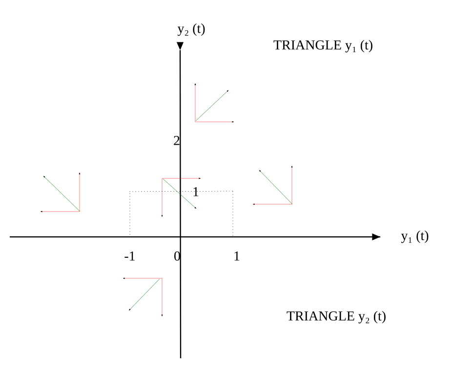
고정점이라 부르는 이유는 \(y_{t+1} =f(y_{t} )\)의 정상상태가 \(y*=f(y*)\)로 고정점을 의미하기 때문. 수학기초 ‘고정점 정리’ 참조
↩이런 형태의 함수를 이산형 로지스틱 곡선(logistic map)이라 한다. 인구증가이론에 많이 사용된다.
↩자세한 설명은 http://homepages.ulb.ac.be/~dgonze/TEACHING/logistic.pdf 참조
↩예를 들어 (0, 1)을 대입
↩예를 들어 (1, 0)을 대입
↩기준선 ②는 좌우에서 이를 향하여 수렴하는 형태를 취하고 기준선 ④는 이를 중심으로 상하로 발산하는 형태를 취하지만 해의 경로는 안장경로가 아니라 수렴하는 형태를 띰에 주의
↩예로 (0, 0) 대입
↩미분방정식의 경우에는 이런 문제가 발생하지 않는다.
↩